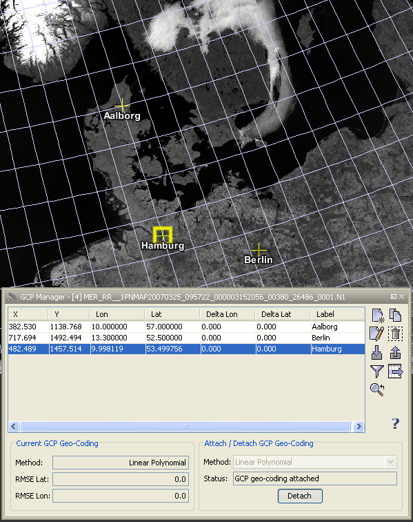
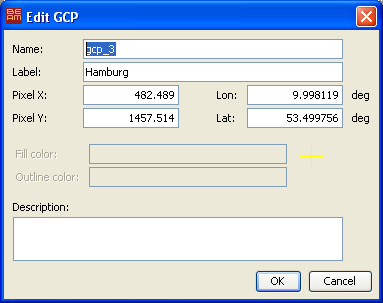

| GCP Management | |
A GCP is a marker for a certain geographical position within a geo-referenced image. The properties of a GCP are
In contrast to a pin a GCP is fixed to a geographical position. It can be set to a different image location in order to create a GCP geo-coding for a product or improve an existing geo-coding or define a new one.
GCPs are displayed as symbols at their geographical positions in image views associated
with the current product. GCPs are stored in the current product and available again if the
product is re-opened.
New GCPs can be created with the GCP Tool
It is also possible to create and remove GCPs by using the GCP Manager.
The GCP Tool 
The GCP Tool is used to create a new GCP. If the GCP Tool is active, a click into an image view
creates a new GCP at the current cursor position.
The Select Tool 
Selecting existing GCPs can be done with the Select Tool. If you click on an existing GCP with the Select Tool
it becomes the selected GCP. If you double-click on an existing GCP the Edit GCP dialog appears
and lets you edit the properties of the selected GCP.
The GCP manager is used to display all GCPs stored in the current product within a table and provides some GCP related operations.

If you click on a GCP within the table it becomes the selected GCP.
Double-clicking on GCP in the table opens the Edit GCP.
You can also change the values for X, Y , Lat and Lon of the GCP, by editing the table cells directly.
In the following the tool buttons of the GCP manager are explained.
| Creates a new GCP and adds it to the product. | |
| Creates a new GCP by cloning the selected GCP. | |
| Opens the edit dialog for the selected GCP. | |
| Removes the selected GCP from the current product. | |
| Imports a single GCP from a flat text or XML file. | |
| Exports a single GCP to an XML file. | |
| Enables the expansion of the table with pixel values. | |
| Exports all values of the displayed table to a flat text file. The exported text is tabulator-separated and may therefore be import directly into a spreadsheet application (e.g. MS Excel). | |
| Centers the image view on the selected GCP. |
The 'Edit GCP' dialog is used to edit the properties of a GCP after a new GCP has been created or after a selected GCP has been double-clicked. This dialog is also available in the GCP manager.

The editable GCP properties are
This geo-coding calculated by using the defined GCPs as reference points and the given polynomial method type.
You can choose between the linear, quadratic or a cubic polynomial method.
The status field below the polynomial method chooser shows you if you already have enough GCPs
defined for the currently chosen method or if the geo-coding is already attached to the product.
On the lower left hand side information about the currently attached GCP geo-coding is displayed.
It shows the used polynomial method and the overall RMSE for the latitudes and longitudes.
In the table you can see the deviation (Delta Lat and Delta Lon) for each GCP from the
given to the calculated geo-position.
If you attach a GCP geo-coding to the product the former geo-coding is preserved and restored if you detached
the GCP geo-coding.